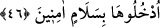
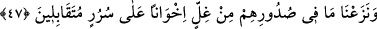

46. “Oraya emniyet ve selâmetle girin” (denilir, onlara).
Cennetin kapısına ulaştıkları, bir cennetten ötekine yöneldikleri zaman meleklerin
dilinden onlara: Ey müttakîler! “Oraya” bu cennetlere “emniyet” âfetlerden emin
olarak “ve selâmetle” her türlü korku veren şeyden uzak olarak ya da “Allah size selâm
ediyor.” diye selâmlanarak “girin” denilir. et-Te’vîlâtü’n-Necmiyye’de belirtildiğine
göre Allah’tan olan selâm, cezbe-i ilâhiyye demektir. “Emniyet”ten maksad ise cennete
girmeye mâni olan şeylerden ve cennete girip vuslata erdikten sonra da oradan
çıkmaktan emniyette olmak demektir.
Burada seyr fillâhın ancak Allah ile ve O’nun cezbeleriyle mümkün olabileceğine
işâret vardır. Tıpkı mi‘râc gecesi Cibrîl (a.s.)’ın sidretü’l-müntehâda kaldığı vakit Nebî
(s.a.)’in durumu gibi.
Öyle harâretle ilâhî yakınlık vâdisine sürdü
Ki Cebrâil sidrede O’ndan geride kaldı
Refref de ‘kâbe kavseyn’ (iki yay mesâfesi) makamında ondan ayrıldı. O, Allah’a
yakınlığın kemâli olan ‘ev ednâ’ (daha da yakın) makâmına ancak “Üdnü minnî (Bana
yaklaş!) cezbesiyle ulaştı. İşte Allah’ın selâmı ile girmenin mânilerinden ve ulaştıktan
sonra çıkmaktan selâmette olmuştur.
47. Biz, onların gönüllerindeki kini söküp attık; onlar artık köşkler üzerinde
karşı karşıya oturan kardeşler olacaklar.
Dünyâdaki bir düşmanlık sebebiyle “Biz, onların gönüllerindeki” cennetliklerin
sînelerinde gizli olarak bulunan “kini söküp attık;”
Hz. Ali’nin: “Benim, Osman, Talha ve Zübeyr’in onlardan olacağımızı umuyorum.”
dediği rivâyet edilir.
Burada işâret vardır ki beşeriyet vasıflarının kini, nefsin emmâreliğinden/durmadan
kötülüğü emretmesinden ve nefsin kötü sıfatlarından ileri gelmektedir. Bu kin
nefislerden ancak Allah Teâlâ’nın çıkarıp atması ile çıkar. Kimin kini sökülüp atılmazsa
cennete girdikten sonra çıkmaktan emniyette olmaz. Nitekim Âdem (a.s.) nefis
tezkiyesinden ve nefsin sıfatlarından arınmadan önce cennete sokulduğu için şu sözlerin
söylenmesine sebep olan gıll u gış yüzünden oradan çıkarıldı: “Âdem Rabbine karşı
gelip yolunu şaşırdı.” (Tâhâ, 20/121) Sonra Rabbi onu seçti. Tevbesi sâyesinde bu gıll
ü gışi ondan çıkartıp onu cennete hidâyet eyledi.
Fakir (Bursevî) der ki: Kinin çıkarılması ya dünyâda olur. Bu, nefsin çirkin sıfatlarını
temizlemek ve kalbi kötü ahlâktan boşaltmakla (tahliye) olur. Bu, kâmillere mahsusdur.